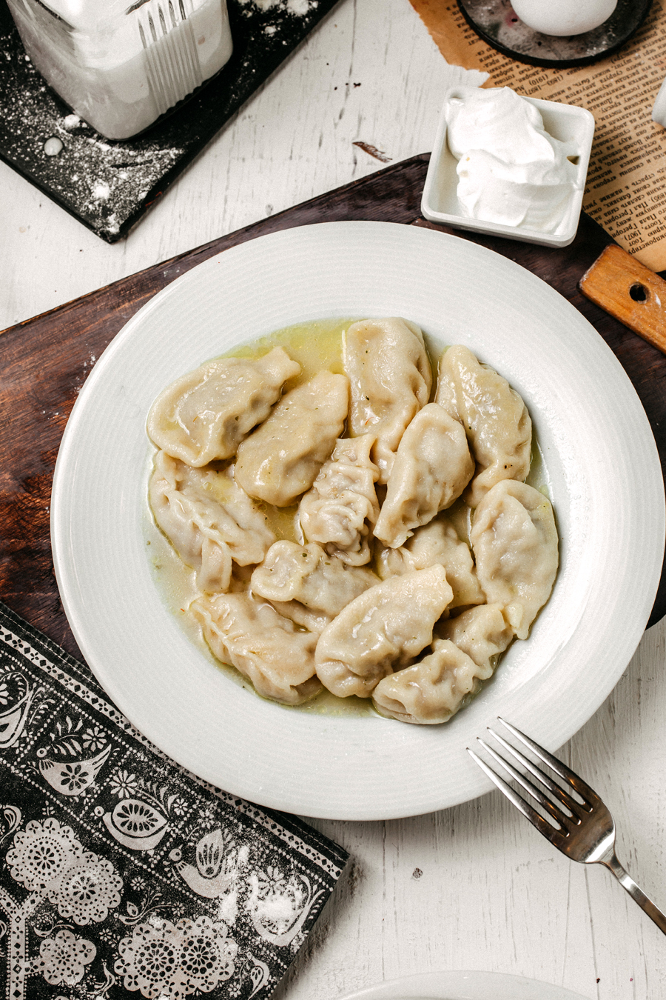
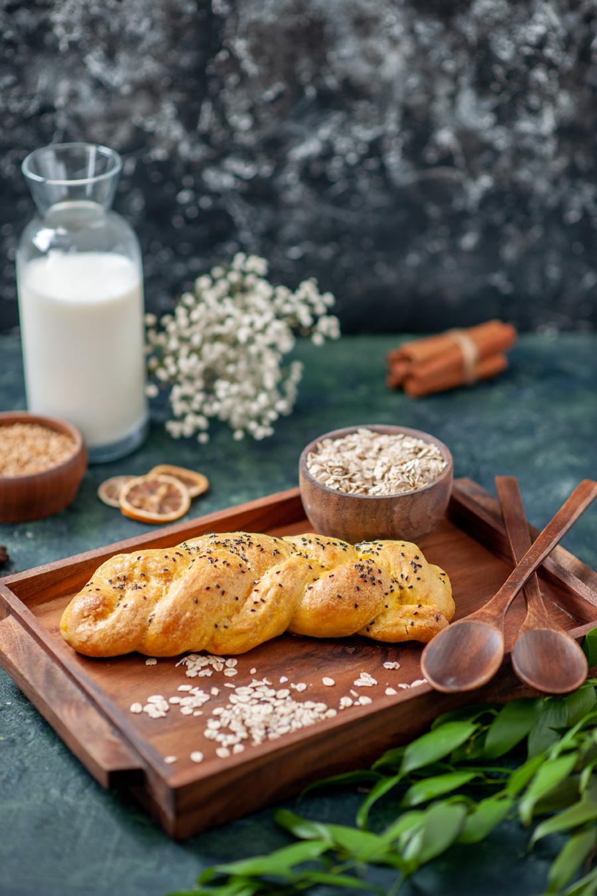

Изображение от KamranAydinov на Freepik
Изображение от mdjaff на Freepik

Изображение от timolina на Freepik
Изображение от timolina на Freepik
Изображение от freepik
| название блюда | оценка от 1 до 10 | ссылка на рецепт | фото блюда |
| Пельмени | 10 | Рецепт | 
Изображение от KamranAydinov на Freepik |
| Рыбник | 9 | Рецепт | 
Изображение от mdjaff на Freepik |
| Пюре | 5 | Рецепт |
Изображение от timolina на Freepik |
| Гречневая каша | 5 | Рецепт |
Изображение от timolina на Freepik |
| Дранники | 7 | Рецепт |
Изображение от freepik |